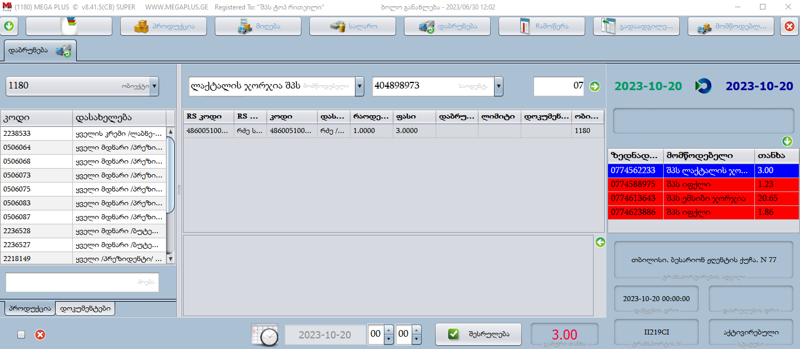
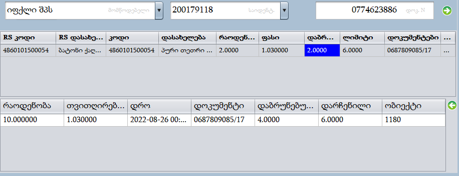
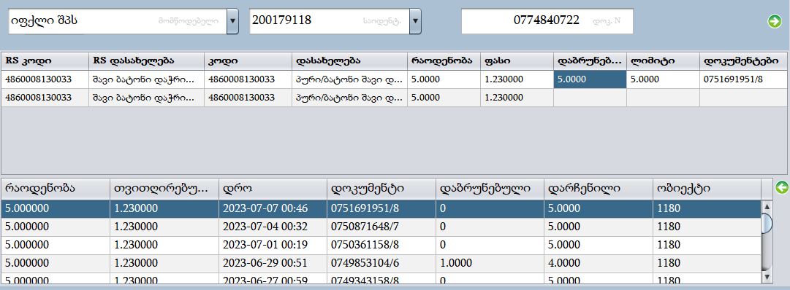

დაბრუნება
დაბრუნების დროს, როგორც მიღების დროს მომწოდებელი ტვირთავს ზედნადებს. ზედნადებში მითითებულია პროდუქციის სახეობა, რაოდენობა და ფასი. დაბრუნება ხდება მიღების ზედნადებიდან, რაც იმას ნიშნავს, რომ დასაბრუნებელ პროდუქცია უნდა გვქონდეს იგივე მომწოდებლისგან და იგივე ფასით მიღებული. ანუ მომწოდებელი რა ფასითაც შემოგვიტანს პროდუქციას იგივე ფასში უნდა დაიბრუნოს. შევიდეთ დაბრუნების ფანჯარაში.
დაბრუნებაში გვაქვს თარიღით ფილტრაცია, მაგრამ მიღებისგან განსხვავებით დაბრუნებაში მხოლოდ 3 დღიანი ინტერვალით შეგვიძლია მოვძებნოთ ზედნადები, ნებისმიერი პერიოდის მაქსიმუმ 3 დღიანი ინტერვალით. მაგალითად თუ დაწყების თარიღს მივუთითებთ 2023 წლის 15 ოქტომბერს , საბოლოო თარიღად შეგვიძლია მივუთითოთ მაქსიმუმ 2023 წლის 17 ოქტომბერი. ასევე გვაქვს მომწოდებლით და ზედნადების ნომრით ფილტრაცია. წითელი დასაბრუნებელი ხოლო თეთრი დაბრუნებულ ზედნადებებს ნიშნავს.
ავირჩიოთ ზედნადები რომლის დაბრუნებაც გვინდა.
შუა გრაფაში გამოგვიჩნდება არჩეულ ზედნადებში ატვირთულ პროდუქციებზე ინფორმაცია:
- RS კოდი - მომწოდებლის მიერ ატვირთული შტრიხკოდი.
- RS დასახელება - მომწოდებლის მიერ ატვირთული პროდუქციის დასახელება.
- კოდი - ჩვენს ბაზაში ამ პროდუქციის შტრიხკოდი(რაზეა პროდუქცია დაკავშირებული.)
- დასახელება- ჩვენს ბაზაში ამ პროდუქციის დასახელება (რაზეა პროდუქცია დაკავშირებული).
- რაოდენობა - რამდენი ერთეული უნდა დავაბრუნოთ პროდუქცია.
- ფასი - რა ფასში უნდა დავაბრუნოთ პროდუქცია.
- დაბრუნებული - რამდენი დავაბრუნეთ მიღების დოკუმენტიდან
- ლიმიტი - რამდენი ერთეულის დაბრუნება შეგვიძლია მიღების დოკუმენტის მიხედვით.
- დოკუმენტი - იმ დოკუმენტის ნომერი საიდანაც დავაბრუნებთ პროდუქციას.
ავირჩიოთ პროდუქცია.(პროდუქციები უნდა დავაბრუნოთ სათითაოდ, დავდგეთ პროდუქციის ზოლზე ნებისმიერ ადგილას)
პროდუქციის არჩევის შემდეგ ქვევით არსებულ ფანჯარაში გამოგვიჩნდება არჩეული პროდუქციის მიღების ზედნადები, სადაც მითითებულია:
- რაოდენობა - კონკრეტული ზედნადებით რა რაოდენობა გვაქვს მიღებული.
- თვითღირებულება - რა ფასში გვაქვს მიღებული
- დრო - როდის მივიღეთ ზედნადები.
- დოკუმენტი - ზედნადების ნომერი.
- დაბრუნებული - კონკრეტული ზედნადებიდან რამდენი ერთეული გვაქვს დაბრუნებული.
- დარჩენილი - რამდენის დაბრუნება შეგვიძლია ამ კონკრეტული ზედნადებიდან.
შემდეგი ნაბიჯია, რომ ავირჩიოთ მიღების ზედნადები რომლიდანაც დავაბრუნებთ პროდუქციას. მიღების ზედნადებები დალაგებულია თარიღის (კლებადობით)მიხედვით და უნდა დავაბრუნოთ ბოლოს მიღებული ზედნადებიდან ანუ პირველი ზედნადებიდან. თუ რაოდენობაში მითითებულია იმაზე მეტი რაოდენობა რაც ერთ ჯერზე ერთი ზედნადებიდან გვაქვს მიღებული, ამ შემთხვევაში მაქსიმუმ რა რაოდენობის დაბრუნებაც შეიძლება შეავსებს პროგრამა და დარჩენილ რაოდენობას ცალკე ველში გადმოგვიტანს, ვნახოთ მაგალითი:
როგორც ვხედავთ პირველი ზედნადების შემდეგ რადგან დასაბრუნებელი რაოდენობა იყო 10 ხოლო ჩვენ

ერთბაშად მხოლოდ5 ცალი გვქონდა მიღებული, 5 დაბრუნდა ხოლო დანარჩენი 5 ახალი
ველის სახით დაემატა, აქ უკვე ავირჩევთ მეორე პოზიციას და მიღებული
ზედნადებებიდან მეორე ზედნადებს, თუ მაინც ერ ეყოფოდა რაოდენობა ავირჩევდით
მე-3-ე ზედნადებს. ამგვარად უნდა შევავსოთ ყველა პროდუქცია და დავაჭიროთ

დაბრუნებისას პროდუქციის არჩევის შემდეგ შესაძლოა არ გვიჩვენოს მიღების ზედნადებები, ამის მიზეზია, რომ ეს პროდუქცია არ გვაქვს შემოტანილი იმ მომწოდებლისგან რომელმაც აგვიტვირთა დაბრუნება, ან არ არის პროდუქცია იმ თვითღირებულებით ატვირთული რა ფასშიც მივიღეთ, როგორც ვახსენეთ, პროდუქცია რა ფასშიც მივიღეთ დაბრუნებაც ანალოგიურ ფასში უნდა მოხდეს.
პროგრამა ავტომატურად ფილტრავს ფასს, რომ შემთხვევით, არასწორ ფასად არ დავაბრუნოთ პროდუქცია. შესაძლებელია მოვხსნათ ფასის ფილტრაცია, იმ მიზნით, რომ გავიგოთ რა ფასში გვაქვს კონკრეტული პროდუქციის მიღება , ანუ რა ფასში უნდა ავატვირთვინოთ მომწოდებელს პროდუქცია რომ შევძლოთ დაბრუნება. დავაჭიროთ
ამ ფანჯარაში გვხვდება სხვადასხვა ფილტრაციები:
დროის ფილტრაცია - მალავს ისეთ ზედნადებებს რომელიც მიღებულია ატვირთული დაბრუნების შემდეგ, პირობითად თუ დაბრუნების ზედნადები ატვირთულია 2023 წლის 10 ოქტომბერის , ამ თარიღის შემდეგ ატვირთულ მიღებებს არ გვაჩვენებ.
ნულის გამოჩენა - გამოგვიჩენს ისეთ ზედნადებებს სადაც მიღებული რაოდენობა უკვე სრულად გვაქვს დაბრუნებული.
ავტომატური განაწილება - როგორც ზემოთ ავღნიშნეთ, თუ ერთბაშად უფრო მეტი რაოდენობაა ვიდენ ერთი ზედნადებით გვაქვს მიღებული, ზედნადების არჩევის დროს გაანაწილებს რაოდენობას. ეს მონიშვნა რთავს ამ ფუნქცია რის გაუქმებაც არ არის რეკომენდირებული.
ფასის გაფილტვრა - გვიჩვენებს არჩეული პროდუქციის ნებისმიერ ფასში მიღებას, თუ ფასის გამო პროგრამა არ გვაბრუნებინებს პროდუქცია, რადგან არ გვიჩვენებს ასარჩევ მიღების ზედნადებს, ფასი გაფილტვრის მოხსნის შემდეგ გამოგვიჩნდება სხვა ფასში მიღებული ზედნადებები. გამოტანილი ზედნადების არჩევა და ზედნადების სხვა ფასში დაბრუნება არ არის რეკომენდირებული რადგან პროგრამასა და RS შორის გვექნება სხვაობა. გამოსავალი არის ის, რომ მომწოდებელს ჩავასწორებინოთ ზედნადები, კონკრეტულად ჩაასწოროს პროდუქციის ფასი და მიუთითოს ის ფასი რა ფასშიც აქვს პროდუქცია შემოტანილი.